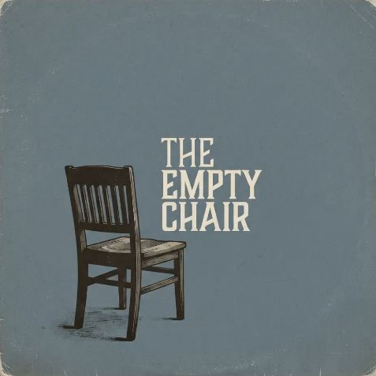
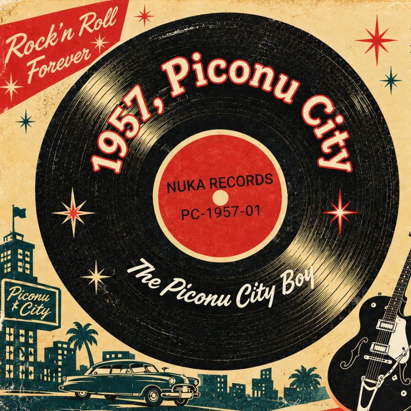
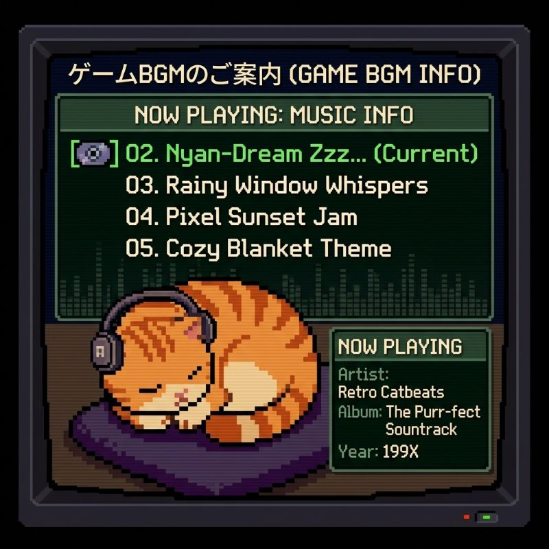
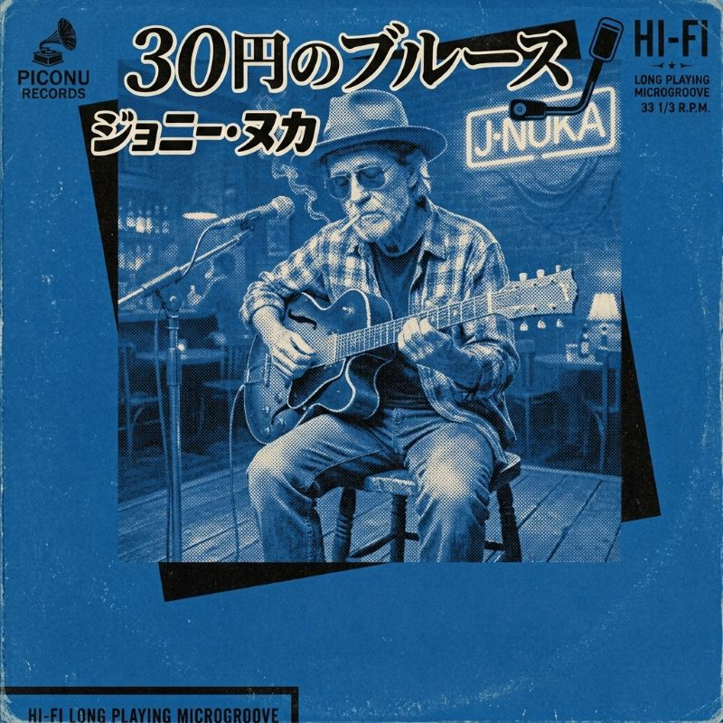

🤖ピコぬ市の音楽コンテンツ置き場ですぬ🤖
ゲーム音楽やオリジナル音源などを公開しています。

ゲーム「猫と宝くじと世界経済の終焉」エンディングテーマ曲です。
ジャケットを押すと、そのアルバムの曲が聴けますぬ。



※掲載されている音源には権利上の都合により、試聴・公開できないものがあります。
各アーティストのプロフィールはこちら。
ピコぬ市内で放送されている
謎のインターネットラジオですぬ。